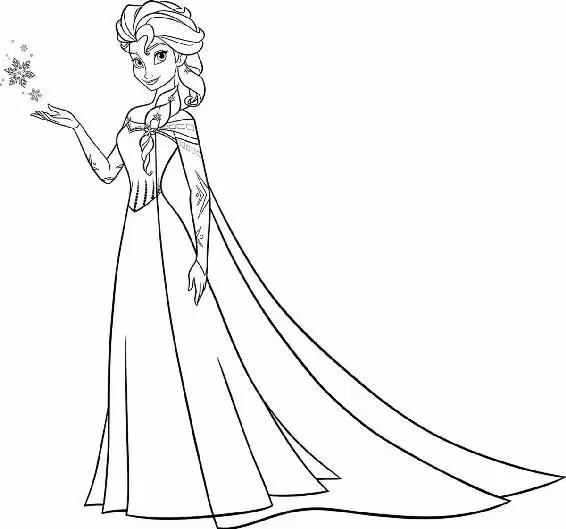

The cathedral was packed with people as the coronation ceremony began. An orchestra played and a choir sang while the royal procession walked down the very long center aisle. The bishop led the way, followed by Elsa, looking regal and serious, and finally Anna, holding the train of Elsa’s dress.
At the altar, Elsa and Anna faced the bishop. Near him lay a silver platter holding the royal crown, scepter, and orb.
Peeking over her shoulder, Anna spotted the handsome Prince Hans. He sat straight and tall, and a stranger was asleep on his shoulder! Hans waved at Anna, who giggled.
The bishop placed the crown on Elsa’s head. Then he turned for the scepter and orb and presented them to Elsa. She reached for the royal items, but the bishop cleared his throat. “Ahem. Your gloves, Your Majesty.”
Elsa took a sharp breath. If she took the gloves off, she might accidentally let out her icy magic. She hesitated, growing pale with worry.
Anna took that moment to look over at Hans and smile at him. She couldn’t wait to talk to him at the ball!
Elsa slowly removed her gloves and placed them on the satin pillow. With a deep breath, she took the orb and scepter into her hands. She turned to face the crowd.
“As the undoubted queen, protector of this dominion,” the bishop intoned, “keeper of the doctrine and government thereof from this day forward, I present to you Her Majesty...”
Elsa’s eyes widened as the scepter and orb began to freeze in her hands! She tried desperately to control her emotions. She was just so nervous!
“...Queen Elsa of Arendelle!” The bishop finished his decree.
The people in the church rose. “Queen Elsa of Arendelle!” they echoed.
Elsa quickly placed the orb and scepter back on the silver tray and grabbed her gloves. With a sigh of relief, she realized that no one had seen the ice on the orb or the scepter. She smiled at the cheering crowd. She had made it through the ceremony!
Later, at the coronation ball, Elsa and Anna stood side by side in a long receiving line at the entrance to the Great Hall. Elsa felt relaxed, almost content, now that the most difficult part of Coronation Day was over. Festive music filled the air as guests danced across the floor of the lavishly decorated ballroom.
“You look beautiful,” Elsa said to Anna.
“Thank you,” Anna said in surprise. A smile spread across her face. Her sister had actually spoken to her! “You look beautiful-er,” Anna replied. Then she realized how strange that had sounded and blurted out an explanation. “Not that you’re fuller. No. Just more beautiful!”
Elsa grinned. “Thank you.” Then she looked out at the crowded ballroom. “So this is what a party looks like?”
Anna nodded. “It’s warmer than I thought.”
“All the people, I guess,” Elsa said. “And what is that amazing smell?”
Both of them caught a whiff of a sweet aroma wafting across the room. “Chocolate!” they exclaimed at the same time. Then they looked at each other and started laughing.
Anna could hardly believe that Elsa was treating her so kindly. She was about to say more to her sister, but just then, a guest stepped up to be presented to the new queen and the princess. “The Duke of Weaseltown,” a royal attendant announced. “Weselton,” the Duke corrected him. Then he bowed his head. “As your closest partner in trade, it seems only fitting that I offer you your first dance as queen.”
Elsa stiffened and clasped her gloved hands together. “Thank you,” she said. “But I don’t dance.” The Duke looked offended, so Elsa quickly nudged Anna forward. “But my sister is a marvelous dancer.” Anna was a little startled, but she allowed the Duke to lead her to the dance floor.
Unfortunately, the Duke was a horrible dancer. He couldn’t seem to take one step without crushing Anna’s toes. As he bobbed up and down, his toupee bounced back and forth on his head — and he never stopped talking.
“Bump-be-dump-bah! Look at me!” he crowed. “This certainly makes up for being shut out for twelve years for no reason. Do you know the reason?” he asked Anna. “No? Well, watch this: like a chicken with the face of a monkey, I fly!”
Anna cringed as the Duke danced around her like a dying peacock. Then she caught sight of Elsa watching from the side of the room, barely able to keep from laughing. Anna shot Elsa a number of “help me” looks, but there was no way out of it. She was forced to finish the dance, much to Elsa’s amusement.
After the dance, Anna limped back to Elsa. “Well, he was sprightly,” said the queen with a smile.
“Especially for a man in heels!” Anna replied. Both sisters giggled.
“Are you all right?” Elsa asked more gently.
Anna smiled. “I’ve never been better,” she said, glancing into Elsa’s eyes. “This is so nice. I wish it could be like this all the time.”
“Me too,” Elsa said wistfully. Then she caught herself and stiffened. “But it can’t.”
“Why not?” Anna asked, surprised at Elsa’s sudden change of attitude.
Elsa tensed. “Because it can’t,” she said firmly. Anna’s felt all her old disappointment rushing back. “Excuse me,” she said. Elsa watched sadly as Anna walked away.
